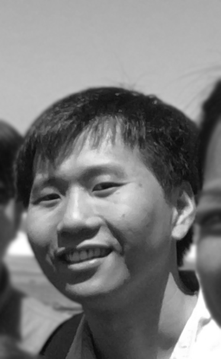

Zhouliang (pronunciation: Joe - Leung) is now having his postdoctoral training at University of
California, Berkeley, with Dr. Abby
Dernburg.
He is super passionate about learning everything along his way of being a biological scientist.